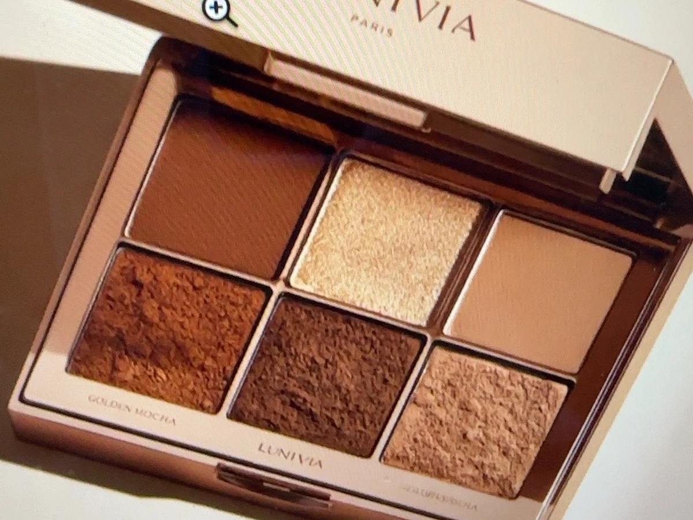

Eyeshadow · Brown / Gold
Golden Mocha Eyeshadow Palette
CAD $40
Warm mocha neutrals meet luminous gold, bronze and champagne accents for versatile day-to-evening looks.
NET CONTENT6 × 1.2 g / Net Wt. 7.2 g
FINISHMatte / satin / textured shimmer
BEST FOREveryday neutrals, warm evening makeup and classic glam
Portfolio demo only. No real purchase will be processed.
Why you'll love it
Product features
- Warm neutral color family
- Matte, satin and textured shimmer finishes
- Easy day-to-night transition
- Classic brown-and-gold pairing
How to use
Apply matte brown through the crease, deepen the outer corner with mocha, and add champagne or gold shimmer to the lid.
Ingredient concept
Illustrative demo formula: cosmetic pigments, mica-style shimmer materials, binders, soft powders and emollients.
Ingredient information is illustrative and not a commercial formulation.